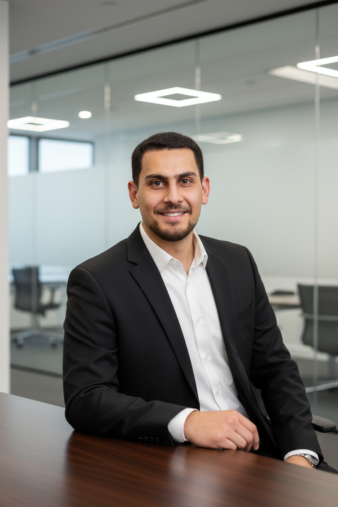
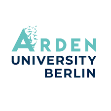
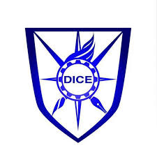

Compliance & Regulatory Affairs Professional
MSc Project Management · Distinction · Lean Six Sigma Green Belt

Detail-driven professional bridging compliance, governance, and inclusive leadership
I am a Compliance & Regulatory Affairs Professional with over 5 years of experience spanning financial compliance, PMO governance in clinical research, quality assurance, and regulatory reporting in IT-intensive environments.
My expertise lies in building robust compliance frameworks that bridge regulatory requirements with operational efficiency. From designing Compliance Monitoring Plans (CMPs) to automating provider performance dashboards using Power BI and Looker, I transform complex regulatory landscapes into actionable governance structures.
I graduated with Distinction from my MSc in Project Management at Arden University, Berlin Campus (Class of 2026). I am a Certified Lean Six Sigma Green Belt and a passionate EDI advocate, committed to creating inclusive environments where every voice is heard and valued.
Risk Assessments, Thematic Reviews, Control Testing, Policy Development
Board Reporting, KPI Dashboards (Power BI), Compliance Monitoring Plans
Lean Six Sigma Green Belt, Root Cause Analysis, Defect Lifecycle Management
Inclusive Event Design, Student Engagement, Community Outreach, DEI Advocacy
5+ years building expertise across compliance, governance, and quality assurance
Building a strong foundation in project management, business, and healthcare administration

A diverse technical and professional skill set built across multiple industries and regions
Turning passion for inclusion into meaningful, purpose-driven action
My commitment to Equality, Diversity & Inclusion is both personal and professional. From volunteering at education expos in Pakistan to applying for the EDI Intern role at Arden University, I have consistently worked to create environments where every individual feels valued, heard, and empowered to grow.
Volunteered as photographer at a student education expo, witnessing how well-organised, inclusive events can open doors and change life trajectories for young people.
Led educational outreach and resource distribution initiative, providing academic kits to underprivileged students in government schools — a foundational highlight in social responsibility.
Attended the Global D&I Benchmarks Conference, gaining deep insight into how diverse voices drive meaningful institutional change and embedding this perspective into all future work.
Elected Vice President Education; designed and led inclusive communication workshops, mentoring sessions, and engagement activities for individuals from diverse backgrounds.
Applied for the EDI Events & Initiatives Intern role at Arden University, formalising commitment to embedding inclusive practices within higher education institutions at a strategic level.
First-hand experience supporting a family member with communication barriers gives me authentic understanding of accessibility challenges that others may overlook.
Mentored diverse cohorts at Toastmasters and spearheaded inclusive communication strategies, demonstrating that leadership is most powerful when it lifts others.
Leveraging analytical and governance skills to bridge the gap between DEI awareness and institutional policy — turning values into measurable, accountable action.
Dedicated to dismantling barriers and fostering environments where marginalised voices are empowered and valued through purpose-driven initiatives and structural change.
Contributing to communities through leadership, education, and project management

Communicating across cultures fluently in three languages
Key delivery and compliance projects demonstrating strategic leadership, process improvement, and regulatory impact.
A presentation covering the design and implementation of an IoT solution for connected manufacturing insights.
A PDF document describing the standardisation of billing flows and improved financial reporting controls.
A slide deck detailing the creation of a financial dashboard for monitoring compliance and operational KPIs.
Whether you're looking for a compliance expert, project manager, or a passionate EDI advocate — I'd love to connect and explore opportunities together.